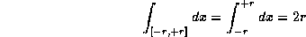
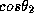
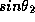
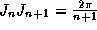

Home André Brouty
Home André Brouty
Dans on définit les deux ensembles suivants pour un réel r positif:
Le premier est appelé la boule de rayon r et le second la sphère de rayon r. Nous nous intéresserons à la mesure du volume du premier, le second s'en déduisant par dérivée. Une sphère en dimension supérieure à trois s'appelle parfois une hypersphère; ici nous continuerons de l'appeller sphère.
Cette méthode consiste à partir de la définition classique du volume d'un ensemble B vérifiant les bonnes propriétés
de calculer la valeur de cette intégrale par un changement de variable approprié. Dans le cas de la boule on utilise le passage en coordonnées sphériques (hypersphériques) qui transforme la boule en un parallélépipède (hyperparallélépipède) sur lequel l'intégration se fait aisément par séparation des variables.
Ce cas est singulier car l'espace est alors réduit à un point et on peut
dire que le volume est 0. Cette valeur ne peut être que conventionnelle car
il n'existe pas de géométrie à un point (il en faut au moins 3) et encore
moins de théorie de l'intégration.
Ce cas est facile la boule de rayon r étant réduite au segment [-r,+r]
sa mesure est la longeur du segment: 2r

C'est le cas du plan. Le changement de variable est fait par les classiques
coordonnées polaires dans le domaine qui réalise une bijection
avec la boule de rayon r, avec le déterminant fonctionnel associé:
et la valeur de l'aire est:
c'est le cas de l'espace. Le changement de variable est fait par les classiques
coordonnées sphériques dans le domaine
qui réalise une bijection avec la boule de rayon r, avec le déterminant fonctionnel associé:
Nous allons calculer le déterminant fonctionnel en le développant par rapport à la dernière colonne, nous obtenons:
Dans le premier déterminant mettons 
en facteur (première ligne) et 
dans le second. Nous obtenons:
et la valeur de l'aire est:
C'est le cas général qui nous intéresse. Nous allons procéder par récurrence en généralisant la méthode ci-dessus et considérer les coordonnées hypersphérique d'un point dans un espace à n dimensions. Si nous passons de la dimension n - 1 à la dimension n nous rajoutons un axe de coordonnées supplémentaire qui sera orthogonal aux n-1 axes du sous espace à n-1 dimensions. Le vecteur d'un point M de cet espace fait avec l'axe un angle et la projection de M sur cet axe est , les autres angles étant inchangés dans le sous-espace. Nous obtenons donc les coodonnées hypersphériques qui constituent une bijection continue de la boule de rayon R dans l'hyperparallélépipède
Nous pouvons donc visualiser le déterminant fonctionnel associé: avec j < i < n - 3
De même nous développons ce déterminant par rapport à la dernière colonne et
nous mettons en facteur dans le premier déterminant et
dans le second et nous obtenons la formule de récurrence:
En développant nous trouvons la formule du déterminant fonctionnel:
Ce qui nous donne comme formule de l'hypervolume:
Soit
La difficulté maintenant est le calcul de ,
que nous pouvons écrire puisque dans l'intégrale
les variables sont liées (ou muettes).
Un calculateur expérimenté reconnait là les intrégrales de Wallis:
Ces intégrales vérifient la relation: 
Les intégrales que nous devons calculer sont définies sur un intervalle double des intégrales
de Wallis, mais comme
est symétrique par rapport à la droite
la valeur de nos intégrales est double de celles de Wallis.
Notons nous avons alors la relation
 que nous utiliserons pour les calculs.
Nous distinguerons 2 cas:
Dans ce cas on peut écrire:
Dans ce cas on peut écrire:

Il ne reste plus qu'à multiplier ces résultats par pour obtenir la mesure du volume de la boule de rayon r en dimension n
La mesure de la surface de l'hypershère s'obtient en dérivant la fonction volume par rapport au rayon. Cette propriété résulte de la formule de Stokes. On obtient:

On trouvera dans [BEG] une méthode moins classique est plus générale pour calculer
les volumes des variétés différentielles euclidiennes dont la boule est un cas particulier.
Ces résultats conduisent à une petite incursion dans les espaces de dimensions supérieures
à trois où l'on peut y faire d'étranges découvertes. En particulier on remarque que pour un
rayon r donné ce volume tend vers zéro quand n tend vers l'infini. Une boule a un tout
petit volume dans de grandes dimensions (mauvais pour les joueurs de pétanque).
Mais il y a mieux! Si ce volume décroit vers zéro, c'est qu'il passe par un maximum pour une
dimension particulière. Prenons pour simplifier une boule de rayon 1 et examinons son volume
suivant les dimensions.
| Dimensions | 1 | 2 | 3 | 4 | 5 | 6 | 7 | 8 | 9 | 10 | 11 | 12 |
|---|---|---|---|---|---|---|---|---|---|---|---|---|
| Volumes | 2 | 3.141 | 4.188 | 4.934 | 5.263 | 5.167 | 4.724 | 4.058 | 3.298 | 2.550 | 1.884 | 1.335 |
Naturellement cela dépend du rayon de la boule choisi, par exemple pour
un rayon de valeur 2, le volume maximal est obtenu pour la dimension 24
(32372.885) alors qu'en dimension 3 il vaut 33.510 et en dimension 60: 3.57.
On laisse au lecteur le soin de calculer dans quel espace devrait vivre un
banquier qui conserve des lingots d'or sphériques de 10 centimètres de
diamètre pour être le plus riche.
Mais il y a mieux encore! Considérons maintenant la boule unité
inscrite dans un hypercube de coté 2, c'est-à-dire que cette boule est
tangente aux 2n hyperfaces de l'hypercube. Le volume de l'hypercube est facile
à calculer, c'est  . Quand le nombre de dimensions n tend vers
l'infini, le volume de l'hypercube croit indéfiniment tandis que celui
de la boule tend vers zéro tout en restant tangente aux hyperfaces.
. Quand le nombre de dimensions n tend vers
l'infini, le volume de l'hypercube croit indéfiniment tandis que celui
de la boule tend vers zéro tout en restant tangente aux hyperfaces.
Le volume de la boule est négligeable devant le volume de l'hypercube circonscrit, et cela quel que soit le coté de l'hypercube même si ce dernier a un coté plus petit que 1 et donc que son volume tend vers zéro quand la dimension croit, car le rapport des volumes de l'hypercube et de la boule tend vers l'infini quand la dimension de l'espace qui les abrite tend vers l'infini. Il vaut toujours mieux être un cube qu'une sphère quel que soit l'espace.
Ceci explique pourquoi les banquiers de la question précédente n'ont jamais
de lingots sphériques.
Et aussi pourquoi dans les espaces à beaucoup de dimensions les marchands d'oranges occupent beaucoup de place pour empiler peu d'oranges.
[BERG] Berger et Gostiaux, "Géométrie différentielle", Armand Colin,
Collection U
Home André Brouty